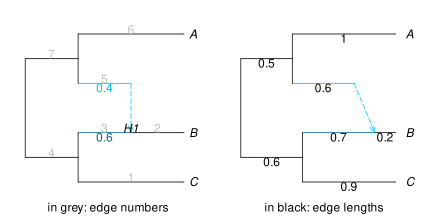
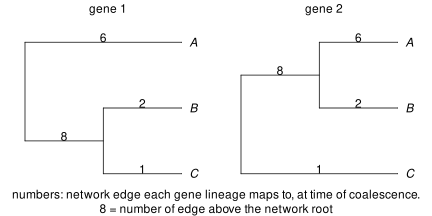

getting started
installation
To install Julia see here and to install Julia packages, see here. To install PhyloCoalSimulations in the Julia REPL (as well as PhyloNetworks for many utilities), enter package mode with ] and do this:
add PhyloCoalSimulations
add PhyloNetworksor do this in julian mode:
using Pkg
Pkg.add("PhyloCoalSimulations")
Pkg.add("PhyloNetworks")basic simulation example
example network
For a basic example, we use a simple 3-species network plotted below. On the left, the plot shows the edge numbers (black) and the γ inheritance values (blue). On the right, the length of horizontal lines are proportional to edge lengths, and the plot shows the edge length values.
using PhyloNetworks
net = readnewick("((C:0.9,(B:0.2)#H1:0.7::0.6):0.6,(#H1:0.6,A:1):0.5);");
using PhyloPlots
plot(net, showedgenumber=true, shownodelabel=true, showgamma=true, tipoffset=0.1);
plot(net, showedgelength=true, useedgelength=true, tipoffset=0.1);
Note that this example network is not time consistent: the length of the path from the root to the hybridization node H1 is different depending if we go through the major edge (0.6+0.7=1.3) or the minor edge (0.5+0.6=1.1).
Coalescent simulations can be performed along such networks, also along non-ultrametric networks. If the network is ultrametric (time-consistent, and with all tips at the same distance from the root), then gene trees will also be ultrametric.
The input network needs to be rooted correctly, as some properties of gene trees may depend on the root. If a network was estimated using a method that estimates a semidirected network (where the root placement is arbitrary) then make sure to root this network appropriately, e.g. using an outgroup, before simulating genes along this network.
basic example: simulate, save to file, plot
We use simulatecoalescent to simulate gene trees along this network. Below, we simulate 2 gene trees, with 1 individual per species.
julia> trees = simulatecoalescent(net, 2, 1)2-element Vector{PhyloNetworks.HybridNetwork}: PhyloNetworks.HybridNetwork, Rooted Network 4 edges 5 nodes: 3 tips, 0 hybrid nodes, 2 internal tree nodes. tip labels: C, B, A ((C:1.561,B:1.361):0.003,A:1.564); PhyloNetworks.HybridNetwork, Rooted Network 4 edges 5 nodes: 3 tips, 0 hybrid nodes, 2 internal tree nodes. tip labels: C, B, A (C:2.85,(B:2.679,A:2.679):0.171);
Branch lengths are assumed to be in coalescent units in the species network (number of generations / effective population size), and edge lengths in gene trees are also in coalescent units.
We can work with these gene trees within Julia with downstream code, and/or we can save them to a file:
julia> writeMultiTopology(trees, stdout) # write them to standout output (screen here)((C:1.5609895403537586,B:1.3609895403537586):0.0028771418863248696,A:1.5638666822400835); (C:2.8499553291701276,(B:2.678786376698085,A:2.678786376698085):0.1711689524720427);julia> writeMultiTopology(trees, "genetrees.phy") # warning: will overwrite "genetrees.phy" if this file existed
Let's plot these 2 gene trees. In the plots below, we annotate each edge with its attribute that tracked the network edge on which the coalescent event occured (where the gene tree lineage originated, going back in time). For example, the gene lineage that ends in A is always mapped to network edge 6, which is the number of the external edge to A in the network (see plot of network above on the left).
using DataFrames
for i in 1:2
gt = trees[i]
plot(gt, tipoffset=0.1,
edgelabel=DataFrame(number = [e.number for e in gt.edge],
label = [e.inte1 for e in gt.edge]));
end
several individuals per species
We can ask for more individuals. To simulate 3 individuals / species for example:
julia> simulatecoalescent(net, 1, 3) # 1 gene tree only. 3 individuals in each species1-element Vector{PhyloNetworks.HybridNetwork}: PhyloNetworks.HybridNetwork, Rooted Network 16 edges 17 nodes: 9 tips, 0 hybrid nodes, 8 internal tree nodes. tip labels: B_3, C_3, C_2, C_1, ... (((B_3:0.964,C_3:0.964):0.214,(C_2:0.756,C_1:0.756):0.422):1.125,((B_1:0.595,B_2:0.595):0.849,(A_1:0.079,(A_2:0.054,A_3:0.054):0.025):1.565):0.659);
We can also ask for varying numbers of individuals. For example, we simulate below 2 individuals in A and 1 individual in each of B and C, using a dictionary to map species to their number of individuals:
julia> genetrees = simulatecoalescent(net, 1, Dict("A"=>2, "B"=>1, "C"=>1));julia> writenewick(genetrees[1])"(C:1.7342183562262905,(B:1.1125494690619213,(A_2:0.39810435449985226,A_1:0.39810435449985226):0.9144451145620689):0.42166888716436934);"
We can set 0 individuals within a species to simulate missing data.
julia> genetrees = simulatecoalescent(net, 3, Dict("A"=>2, "B"=>1, "C"=>0));julia> writeMultiTopology(genetrees, stdout)((A_1:0.6217550029603106,A_2:0.6217550029603106):1.8934561254937003,B:2.515211128454011); ((A_1:0.020216077041873223,A_2:0.020216077041873223):1.6564835196459733,B:1.6766995966878466); (B:1.3598531402719405,(A_2:0.5258264787632165,A_1:0.5258264787632165):1.034026661508724);